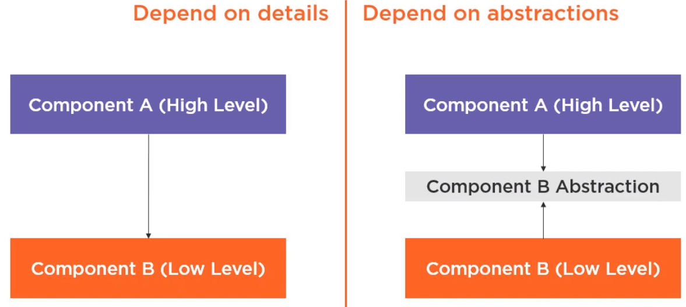
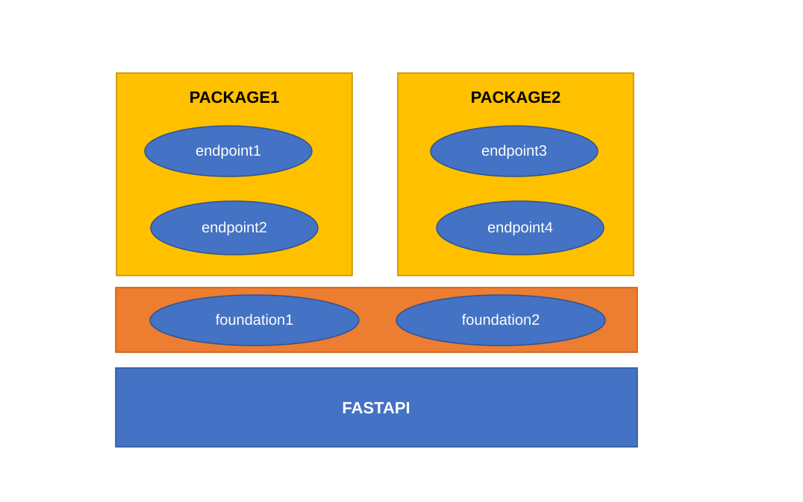

Design¶
DIP Principle¶

DIP is one of the SOLID object-oriented principle invented by Robert Martin (a.k.a. Uncle Bob)
DIP Definition
* High-level foundations should not depend on low-level foundations.
Both should depend on the abstraction.
* Abstractions should not depend on details.
Details should depend on abstractions.
Source: https://martinfowler.com/articles/injection.html
Theory: https://www.cs.utexas.edu/users/downing/papers/DIP-1996.pdf
Example: https://www.geeksforgeeks.org/dependecy-inversion-principle-solid/
Tutorial: https://www.tutorialsteacher.com/ioc
Architecture¶
Three Layers¶
Based on FastAPI framework, FastAPI-Hive Framework supports two components: foundation and endpoint.
foundation for common modules which are dependent on by endpoints.
endpoint for every service module which expose routers on swagger API page.

Initialization Precedure of Startup¶
FastAPI Hive Framework loads packages of foundations and endpoints, It covers the foundation and enpoint common initialization requirements, and provide hooks mechanism to startup/shutdown environment. Endpoints mount their own routers from startup hooks.
so the overview of precedure:
* loading foundations
* loading endpoints (recursive package walk for beans; @endpoint only on the package root)
* collect bean definitions from scan + hive.autoconfigure entry points + AUTOCONFIGURE_IMPORTS
* filter with @conditional (static checks, then on_bean / on_missing rounds)
* run configure() (foundation hooks and accepted autoconfigure classes)
* HiveContext.refresh() creates app-scoped singletons
* call startup hooks
Startup hooks calling flow:¶
There are serveral stages in startup hooks calling stages:
* call foundations' before_endpoint_startup hooks one by one.
* call endpoints' startup hooks one by one. @endpoint classes must be defined in the endpoint package root (__init__.py). Mount APIRouter instances here with app.include_router.
* call foundations' after_endpoint_startup hooks one by one
* call application runners (@runner) one by one
The same is as with shutdown hooks calling logic.
flowchart TD
subgraph bootstrap [init_modules]
loadCS[load foundations]
loadEP["load endpoints: beans from all submodules, @endpoint only on package root"]
beans[collect beans then apply conditionals]
configure["configure: foundations and autoconfigure"]
refresh[HiveContext.refresh]
loadCS --> loadEP --> beans --> configure --> refresh
end
subgraph startupEvent [FastAPI startup]
beforeStart[foundation before_endpoint_startup]
epStart["endpoint startup: include_router"]
afterStart[foundation after_endpoint_startup]
runners[application runner run]
beforeStart --> epStart --> afterStart --> runners
end
subgraph shutdownEvent [FastAPI shutdown]
beforeStop[foundation before_endpoint_shutdown]
epStop[endpoint shutdown]
afterStop[foundation after_endpoint_shutdown]
beforeStop --> epStop --> afterStop
end
refresh --> startupEvent
startupEvent -->|"app running"| shutdownEventPer-request setup¶
Foundation hooks do not run on each HTTP request. Register middleware from configure() when a request needs a resource opened before the endpoint and closed afterwards, for example a database session. Middleware can see the response, run cleanup when the endpoint raises, and nest in registration order.